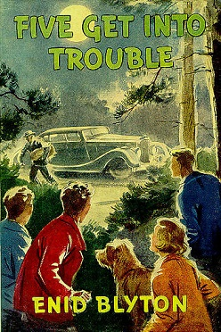

That's me! ☝️
My favourite hobby is reading. Reading is a habit that every child should indulge in as it improves our vocabulary and imparts knowledge. I enjoy reading storybooks. The Famous Five by Enid Blyton is my favourite book.üìö
My other hobbies include coding, dancing and drawing.


My favourite cartoon character is Shinchan. He is a Japanese character. The show is telecasted on Hungama channel. The reason why I like Shinchan is because he is a jolly and lively character. He makes me laugh a lot ü§£!
The other cartoon characters that I like include Chacha Choudhary and Chhota Bheem.

My favourite food item is Chole Bhature. It is a traditional North Indian dish. Bhature is a bigger version of puri and is made of maida. Chole is a curry which is made of Kabuli Channa or white gram. ü•ò
The other dishes that I like are dosa and muthiya.